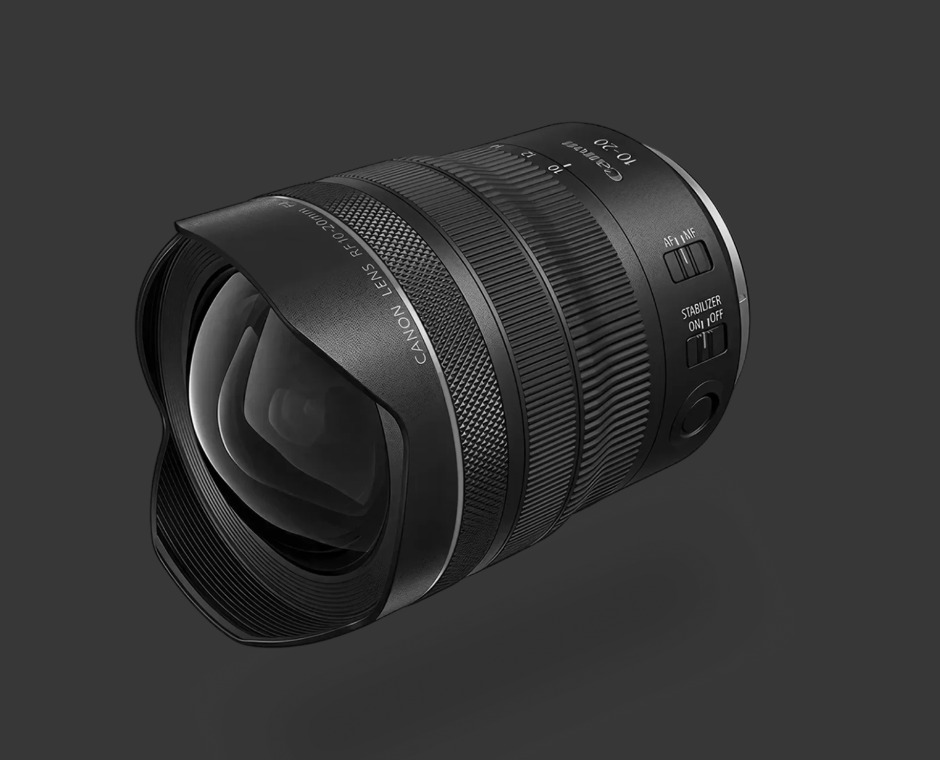
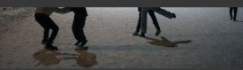
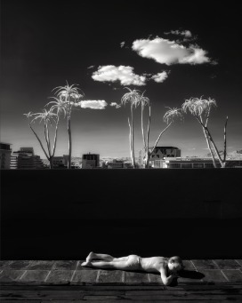
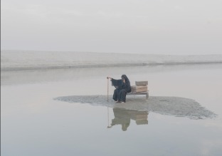
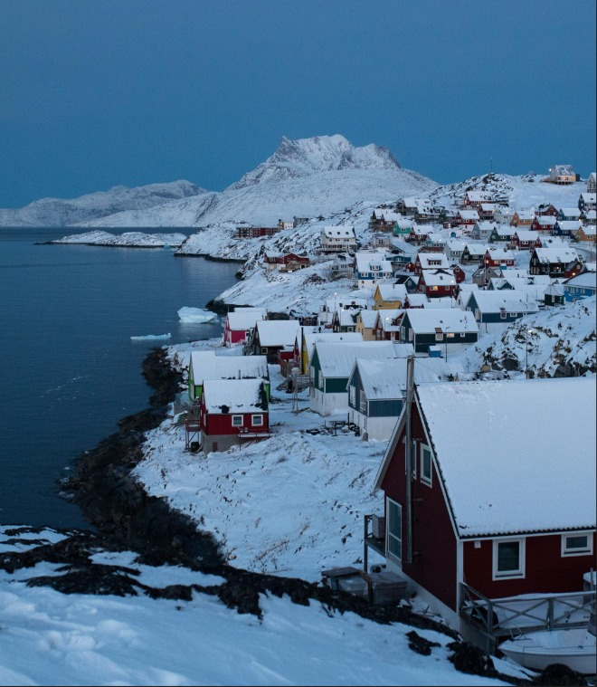

RF16-28mm F2.8 IS STM
EF11-24mm F4L USM의 초광각 영역을 한층 더 넓히는 세계 최초*1광각단 10mm의 초광각 줌 렌즈입니다.
비구면 렌즈, UD(Ultra Low Dispersion) 렌즈로 화면 중심부에서 주변부까지 색번짐이 적은
선명한 묘사를 발휘하며 EF11-24mm F4L USM 이상의 고화질을 실현하면서도 무게는 약 1/2로 경량화하였습니다.



TECHNOLOGY
- UD 렌즈Super UD 렌즈유리 몰드 비구면 렌즈
- SWCASC불소 코팅컨트롤 링방진 / 방적 구조
- STMIS (렌즈 내 손떨림 보정)IS 통합 제어
SPECIFICATION
- 화각 (수평/수직/대각선)
- 74°~29° · 53°~19°30′ · 84°34°
- 렌즈구성
- 15군 21매
- 조리개 날
- 9매 (원형 조리개)
- 최소 조리개
- 22
- 화각 (수평/수직/대각선)
- 74°~29° · 53°~19°30′ · 84°34°
- 렌즈구성
- 15군 21매
- 조리개 날
- 9매 (원형 조리개)
- 최소 조리개
- 22
MEDIA
